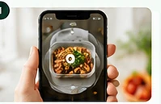
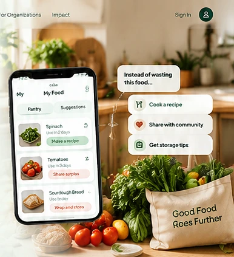
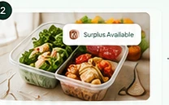
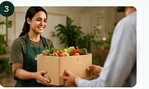
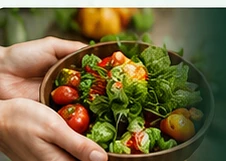

Plan before you buy
Check your pantry and shopping needs so groceries don’t turn into duplicates.
EcoLoop helps you avoid buying twice, make the most of ingredients and leftovers, and share usable surplus with community organizations when you have more than you need.

Start with what’s already in your kitchen. Sharing is there when you genuinely have more than you can use.
Food recovery starts before food becomes waste.

Check your pantry and shopping needs so groceries don’t turn into duplicates.
Spot food to use soon and find ideas for ingredients or leftovers.

Publish a surplus offer with food details, quantity and pickup window.

Organizations find nearby offers, arrange pickup and confirm what they receive.
Different daily needs, one connected food journey—from mindful household habits to community collection.
Less guesswork at the store. More ideas at home. A thoughtful way to share anything extra.
For registered NGOs, food banks, orphanages and community kitchens coordinating food recovery.
Gemini can help interpret food photos and everyday requests. People review the details; real availability and route data determine what happens next.
EcoLoop can suggest editable information from an image. You check the details before saving or publishing anything.
“We need vegetarian food for 30 people near us, available to collect today.”
EcoLoop can translate a request into search constraints, then show matching available offers and pickup possibilities.
We won’t invent kilograms saved, meals served or organizations supported. EcoLoop is designed to distinguish what was offered from what was actually collected and received.
Make better buying decisions and use ingredients before they become surplus.
Review and edit suggestions; AI observations are not food-safety certifications.
Confirmed handovers—not published listings—form the basis of redistribution metrics.

Start with your own kitchen, or help your organization connect surplus with community needs.